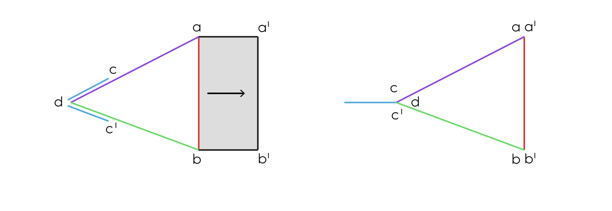

Description
- Random pattern cutaneous flap
- Designed as an isosceles triangle directly adjacent to the primary defect.
- The orientation of the 'V' is designed such that the resulting 'Y' has a central limb that aligns with resting skin tension lines
- The apex of the triangle’s long sides is an angle of approximately 30 degrees BUT The angle of the 'V' apex determines the extent of donor site morbidity (a small apex angle results in a long but narrow donor site defect, while a large apex angle results in a short but wide donor site defect) 